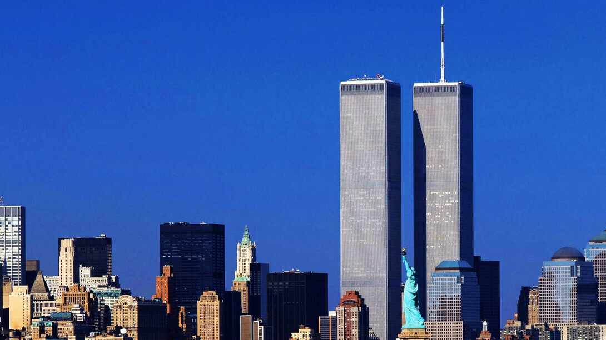
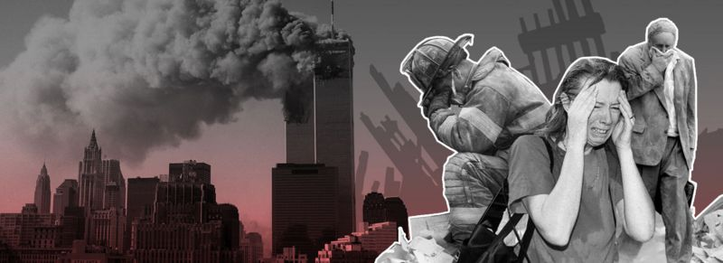
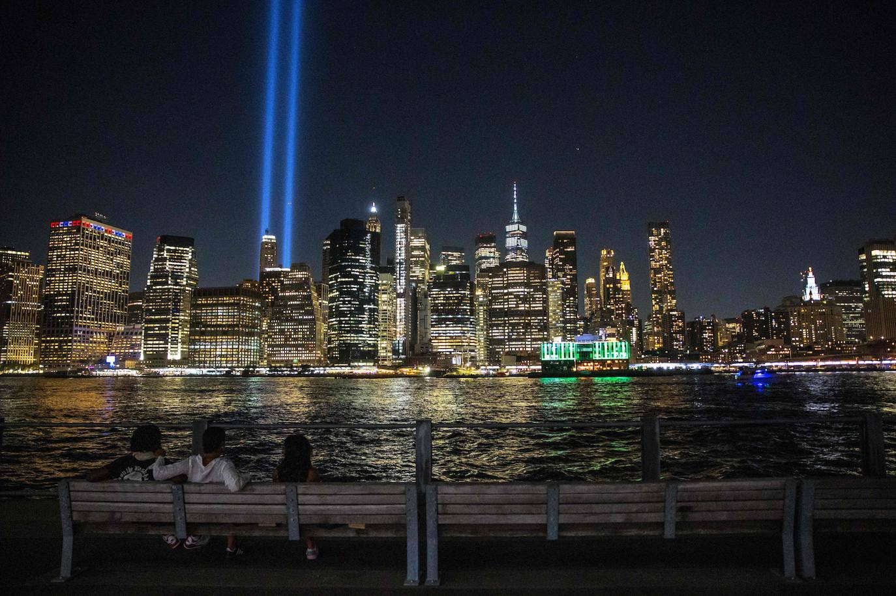

Creado por: Leider Sanjur, Gerald Morales y Yackniel Martínez
El 11 de septiembre de 2001, Estados Unidos fue atacado por un grupo terrorista conocido como Al Qaeda. Cuatro aviones fueron secuestrados, dos de los cuales impactaron las Torres Gemelas en Nueva York.
Los atentados del 11 de septiembre tuvieron efectos profundos en la política mundial, incluyendo el inicio de la "Guerra contra el Terrorismo" y cambios en las políticas de seguridad. Los terroristas de Al Qaeda mataron a 2.996 personas, incluidos los 19 terroristas que llevaron a cabo los ataques. Además, más de 6.000 personas resultaron heridas. El gobierno de Estados Unidos respondió a los ataques con un nuevo tipo de guerra, sin límites claramente definidos. Un mes después de los ataques, el presidente George W. Bush anunció un ataque contra Afganistán. En una encuesta de Pew, el 76% de los consultados mencionaron los ataques del 11-S como uno de los 10 eventos históricos más importantes de su vida. Un año después de los ataques, el gobierno estadounidense anunció que se enfrentaría a amenazas terroristas o de "estados canallas" a través de ataques preventivos.
El 11 de septiembre sigue siendo un punto de referencia en la historia moderna, afectando profundamente las relaciones internacionales y la política interior de muchos países.
